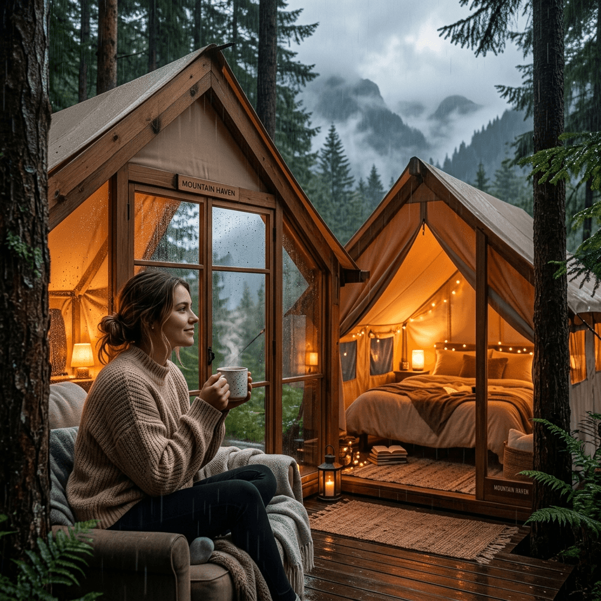

Musim hujan seringkali dianggap sebagai musuh utama bagi para pecinta wisata alam terbuka. Namun, di era glamping modern seperti saat ini, rintik hujan justru menjadi melodi pengiring relaksasi yang paling diburu!
Bayangkan Anda duduk berselimut hangat di balik kemah berbahan tebal (double layer tent), memegang secangkir kopi arabika murni, sementara di luar rintik air menyapu rimbunnya hutan pinus Kota Batu. Anda mencium aroma petrichor—wangi khas tanah basah—tanpa sedikit pun kekhawatiran air bah akan menerobos ke tempat tidur Anda. Di Batu Sunrise Camp, musim hujan bukanlah alasan membatalkan liburan, melainkan momentum terbaik menyepi meresapi syahdunya cuaca pengunungan yang menentramkan.
1. Mengurai Mitos Kemping Hujan = Menderita
Bagi sebagian orang, ingatan tentang kemping saat masa sekolah seringkali diwarnai tragedi tenda rubuh diterpa angin dan genangan air berlumpur menembus ransel basah kuyup. Itu adalah era kemping lawas.
Dengan fasilitas Paket Glamping Eksklusif, kami telah menebas segala potensi penderitaan tersebut. Struktur pondasi tenda VIP di area kami dibangun di atas dipan papan *deck* kayu berundak. Sekeras apapun intensitas curah hujan, air tidak akan sanggup menembus lapisan lantai dari tanah langsung karena tenda Anda sejatinya terangkat bagaikan struktur rumah panggung.
2. Keajaiban Relaksasi Bunyi Hujan (White Noise)
Secara medis dan psikologis, paparan terus menerus dari frekuensi bunyi hujan alami dipercaya sangat efektif mengurangi hormon stres kortisol, memudahkan orang mengidap insomnia tidur pulas, dan menjernihkan sumbatan depresi. Itulah alasan mengapa banyak aplikasi meditasi mereplika suara rintik hujan.
Di Batu Sunrise Camp, Anda tak perlu mendengarnya melalui speaker digital. Mendengarkan derai ritmis bulir hujan yang memukul atasan terpal tebal sambil mendekap hangat *sleeping bag* berkualitas tinggi akan membawa otak Anda masuk ke fase gelombang Alpha—titik di mana sistem pemulihan (*healing*) saraf tubuh Anda diatur ulang ke performa puncaknya.
3. Kenikmatan Makanan Hangat Menghadang Dingin
Temperatur yang anjlok puluhan derajat celcius di saat hujan menuntut satu kompensasi mutlak: makanan berkuah super hangat. Momen paling ajaib ketika cuaca di luar merintik basah adalah meracik ramen (mie rebus instan khas kemah), memanggang ubi Cilembu, atau menikmati wedang ronde dari fasilitas kantin camp.
Lantaran setiap tenda mewah telah ditunjang colokan saklar elektrik internal, para pengunjung sangat diperbolehkan menanak air menggunakan teko listrik (water heater portabel) bawaan bila merasa terlalu malas berbaur ke sentra penyedia makan. Hidup rasanya seratus persen komplit sempurna jika Anda sudah mendapatkan sup keju panas berhadapan langsung dengan sapuan kabut pekat tepat di selipan resleting pintu tenda.
4. Persiapan Ekstra Memboyong Barang
Sekalipun keamanan anti bocor menjadi hal pasti, cuaca musim basah Batu menghendaki kesadaran pengunjung untuk membawa ransum pendukung. Pastikan memasukkan unsur pelapis tambahan ini di koper *staycation* Anda:
- Sandal Karet Bermotif Kasar: Sangat krusial demi menyiasati jalan berpindah (mobilitas) menuju blok toilet umum saat melintasi selasar paving asri agar telapak kaki bebas lengket sisa basahan lumpur maupun resiko tergelincir licin.
- Kantong Kresek/Plastik Vakum: Berfungsi krusial mengamankan penyimpanan busana sisa basah sehabis ganti pakaian usai basah merembas dari siraman curah mendadak di jalan masuk lokasi atau sekadar mengamankan ransel utama.
- Tambahan Kaos Kaki Merino: Salah satu rahasia menghentikan tremor rasa dingin bagi kaum yang kurang terbiasa suhu jatuh nol derajat adalah melipatgandakan tingkat kehangatan pijakan tapak pangkal urat nadinya (telapak kaki).
5. Kesimpulan: Romansa Kemah Anti Basah-Basahan
Sesungguhnya alam yang basah akan melahirkan rintisan tumbuhan berdaun subur di musim berikutnya, begitu pula jiwa kita. Hentikan pemahaman bahwa glamping di cuaca buruk hanya membosankan membuang uang. Menjadikannya pelarian paling sempurna mengintrospeksi ritme kalut keruwetan tugas kota, Anda sungguh-sungguh wajib sekali-sekali mengarungi musim cuaca mendung dingin di bilik anti peluru tenda megah nyaman nan menenangkan yang ditawarkan fasilitas modern Batu Sunrise Camp.
6. FAQ Glamping Musim Hujan
Adiel Ebert Nakula Shandy
Senior Outdoor Enthusiast & Web Developer. Pakar petualang alam yang justru mencari kedamaian batin kala badai hujan menyinggahi puncak lereng pegunungan.